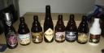
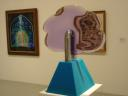
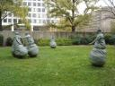
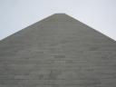

DC - journal and pictures
11/10 - Friday
Fuck. Talk about another extreme [coming from a week alone in the woods]. DC reminds me of a combination of NYC and LA. Streets and cars everywhere and sprawling out to everywhere else. This place makes me want to smoke.
Everything this morning went fine. The drive out of Shenandoah National Park was long and leisurely. Great views from the tops of the mountains. At some point in the past couple days, I had a craving for hot and sour soup - when I got up this morning I was thinking how nice it would be to find a chinese buffet for lunch. Bingo! Manifested. Done. I got my hot and sour and two platefulls of non-vegetarian, non-organic deliciousness. Right off of the road I was on, didn’t even have to look for it. I got in touch with Ethan - he said it’s cool if I come in tonight. He gets off at six and bikes home, so he’ll be here in about an hour and a half. Instead of driving around lost, I decided to just park in front of his house and soak in some of the city. It’s across from a school, which is nice, but it feels like at least some of the neighbors are going through hard times. Still, people wave when they pass me or vice-versa.
night - We had Etheopian for dinner - an experience I haven’t had in many years. It was delicious and more filling than I had expected. We shared some exquisite beers and talked about all manner of thngs - Ethan has a great library including personal classics like Ishmael and Jensen’s stuff and other geekery like G.E.B. or a book by the Long Now Foundation, and other stuff on my reading list or my bookshelf. We shared some music, then I balanced my budget (still roughly on track) and read my LJ friends’ page. I talked to Carl earlier for a while which was good. I wonder how close we’ll stay over the coming years- I feel like we’re on similar paths sometimes but.. hard to describe. Want to call people tomorrow and catch up.. nice to have some down time to just crash and hang out. there’ll be plenty of time for DC…
We had two or three awesome beers tonight but the only one I can remember the name of is Troegenator Double Bock.
11/11 - Saturday
I made hummus & (quinoa) tabouli for dinner. Our awesome beer was a Belgian sampler pack including Piraat Ale, Bornem double and triple brews, Augustijn, Bruegel and Gulden Draak. We were both pretty smashed by the end and ended up falling asleep on the futon in the living room. We cuddled a bit in the night, which was a nice exercise of the platonic-male-cuddling ideal.
11/12 - Sunday
Watched some “protest porn” from Crimethinc. I want it to be successful, but really it’s just frustrating. It’s just not a fulcrum at all. We should be aiming way higher up. We went to the American Indian Museum, which I thought was beautifully put together. The section on “where are they now?” which covers how modern native tribes are struggling to maintain their cultural identities through ceremonies and revivals was bitterly depressing to me. The thought of having one’s culture so totally destroyed is devastating. The museum as a whole lacked an admittance of slaughter/holocaust, which I think is necessary to do the native peoples of this country justice.
We had Etheopian again for dinner and went by the Infoshop - a little book store/zine library/anarchist hangout. I saw a post there for a worker-owned coop doing web programming named Sligo.
Our awesome beers for the evening included Westmalle and Trois Pistoles.
11/13 - Monday
I went down to the mall today and did a bunch of touristy stuff. Walked along the Mall quite a bit. Checked out some modern art at the Hirschhorn. Saw the major points - stone phallus Washington memorial, WW2 memorial, reflecting pool, Lincoln memorial. I went by the National Archives to see the constitution, mainly because I’m interested in it’s creation. I think it’s a brilliant piece of design and would love to know what sort of debates the framers had when putting it together. Daniel said that there was a book containing the notes of the Continental Congress, but I couldn’t find it in the gift shop.
When I got back to Ethan’s neighborhood, I found that one of my car’s windows had been smashed. When I parked there a few days earlier, Ethan had warned me to take everything out of sight because that sort of thing happens, but this was the last day and it was the middle of the day - between noon and 5pm! Luckily (for rain) it was the smallest window (one of the triangle ones at the back), and after looking through everything, they didn’t really take anything important. They left my checkbooks, credit cards, etc. and only took (as far as I can tell) a pocket knife. I figure it was probably just some bored kids - obviously not anyone with a criminal intent. I was more bewildered than scared or angry, and asked Ethan what sort of lesson I was supposed to learn from this. His Zen wisdom was: “Possessions cause suffering.” Only if you get attached to them, I guess.
I drove down to Alexandria to stay with my friend Chris. We had dinner at a Tapas bar and drank and talked.
11/14 - Tuesday
I slept in till 11:00 - wow. Chris and I went to the spy museum, which was fun enough but I would have liked to have seen more info about recent progress in spy techniques and technology. We had more great beer at lunch (although we had to pay for it this time) and had dinner at the Lost Dog cafe - where some portion (all?) of the profits go to a shelter for - you guessed it - lost dogs.
Pictures!!!!
Ethan and his amazing collection of beers, and some beers from the 2nd and third nights: 


Cool stuff from the Hirschhorn:  


Fun on the Mall: 